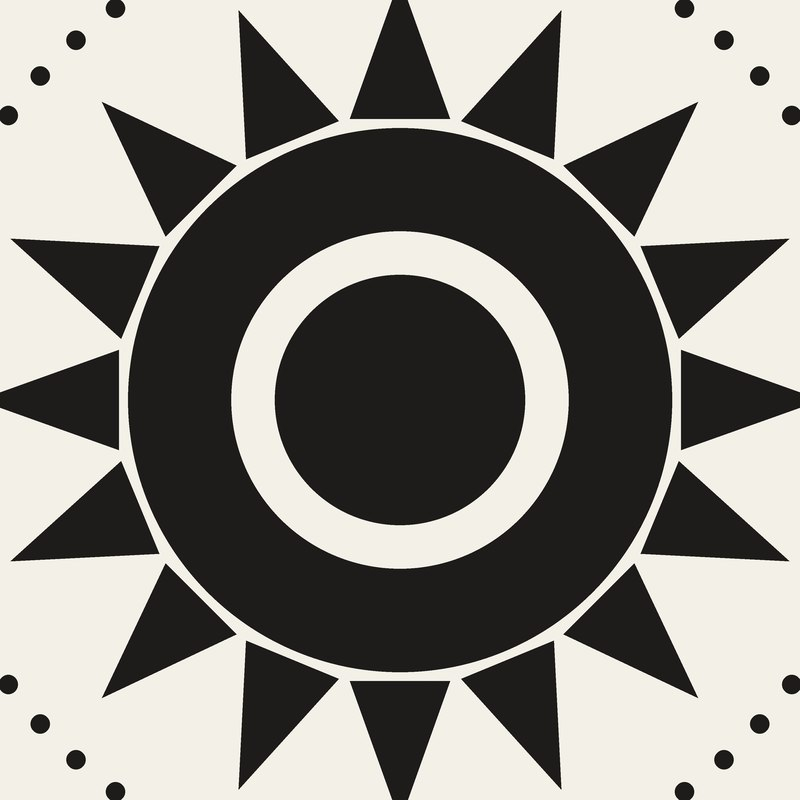
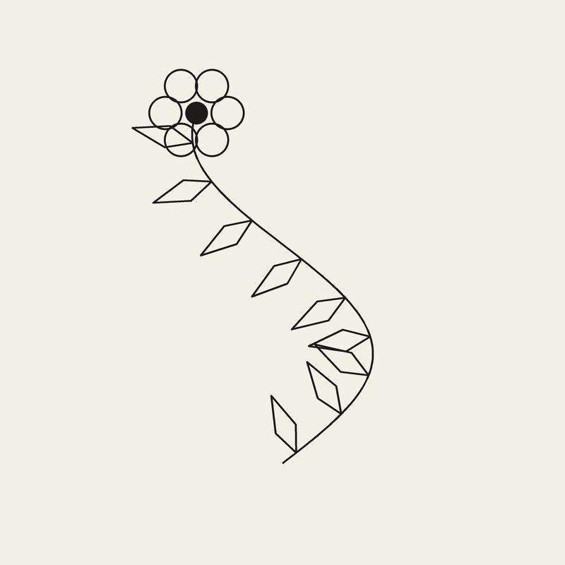
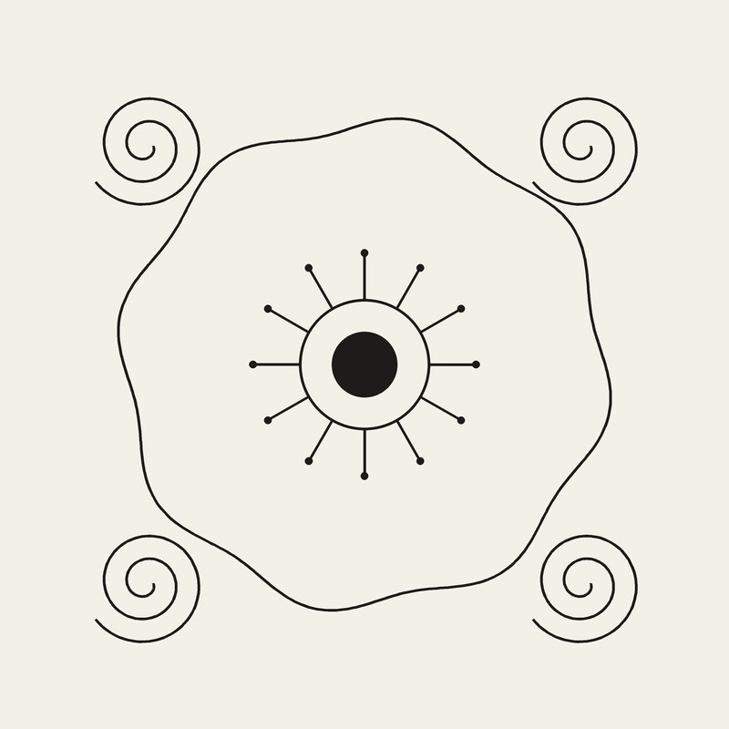
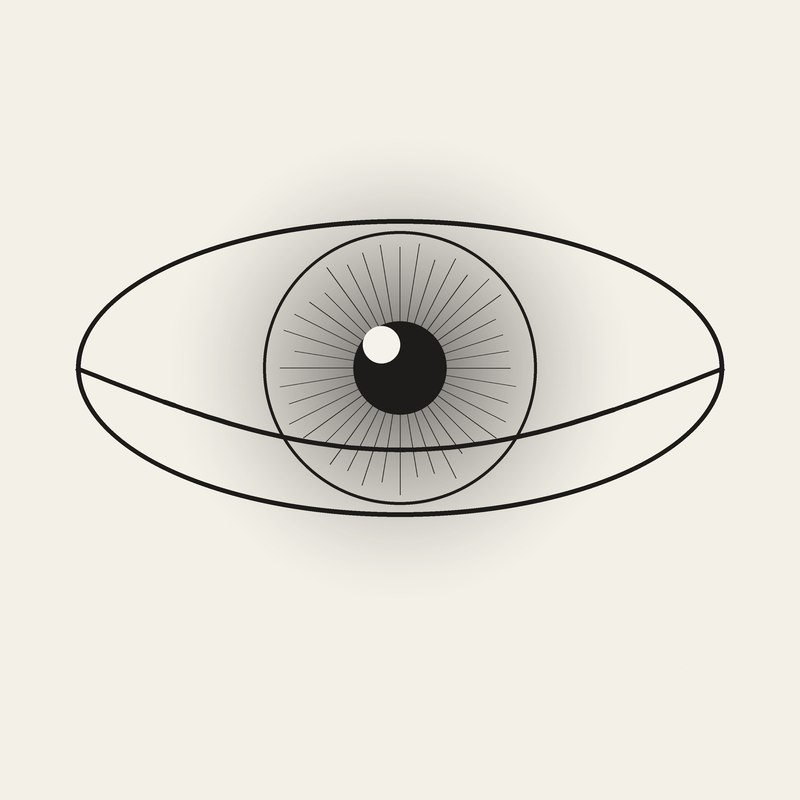

Studio Tato · Buleleng, Bali
Tato custom, dikerjakan di studio atau langsung ke tempatmu.
Muse Ink Bali bikin desain sesuai referensi dan ide kamu, lalu dieksekusi rapi — bisa datang ke studio di Anturan, atau artist yang datang ke lokasimu (layanan panggilan) di area Buleleng dan sekitarnya.
Why Choose Us
Tato panggilan — artist datang ke lokasi kamu
Jarum & alat sekali pakai, kebersihan dijaga
Desain didiskusikan dulu sebelum eksekusi
Layanan
Apa yang bisa dikerjakan
Tato Custom
Mulai dari referensi atau ide kasar kamu, dibikin jadi desain yang pas di badan — lineart, blackwork, fineline, sampai ornamen ala Bali.
Tato Panggilan
Nggak sempat ke studio? Artist bisa datang ke rumah, villa, atau tempat acara — area Buleleng dan sekitarnya, jarak lebih jauh tinggal chat dulu.
Cover-up & Touch-up
Tato lama pudar atau nggak sesuai lagi? Bisa disegarkan warnanya atau ditutup dengan desain baru.
Portofolio
Gaya yang biasa dikerjakan
Contoh desain di bawah masih generik — foto hasil tato asli klien menyusul, tinggal ganti file di folder images/portfolio.

Blackwork

Fineline

Ornamen Bali

Realism
Mau lihat hasil tato lebih banyak? Koleksi lengkapnya ada di TikTok @muse_inkbali.
Artist
Satu artist, satu pengerjaan penuh
Setiap tato di Muse Ink Bali dipegang langsung dari sesi konsultasi desain sampai eksekusi — nggak dioper-oper. Kamu ngobrolin ide lewat WhatsApp, dapat gambaran desain dulu, baru fix jadwal.
Cocok buat yang mau tato custom dengan detail spesifik, atau yang lebih nyaman dikerjain di tempat sendiri lewat layanan panggilan.
Lihat proses di TikTokFollow @muse_inkbali di TikTok untuk lihat proses tato panggilan — salah satu video sempat tembus 1,7K+ views.
Buka TikTokBooking
Cara booking
Chat WhatsApp
Ceritain ide tato, ukuran kira-kira, dan lokasi badan. Kirim referensi gambar kalau ada.
Tentukan lokasi
Mau di studio Anturan atau panggilan ke tempatmu — sekalian atur tanggal dan jam.
DP untuk lock jadwal
Setelah desain dan jadwal cocok, jadwal dikunci dengan DP.
Sesi tato
Eksekusi tato, sekalian dikasih tau cara perawatan setelahnya (aftercare).
Kontak
Studio & Kontak
- Alamat Jl. Kartika No.28, Anturan, Kec. Buleleng, Kabupaten Buleleng, Bali
- WhatsApp 0859-4074-5050
- TikTok @muse_inkbali
- Jadwal Fleksibel via WhatsApp, termasuk untuk sesi panggilan di luar jam studio.